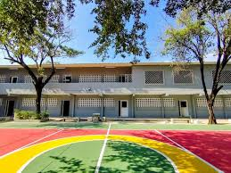

Instituciones Disponibles
Explora y selecciona la sede donde deseas realizar tu matrícula

Cupos Disponibles
Cupos Disponibles
Cupos Disponibles
Cupos Disponibles
Pocos Cupos
Agotado
Colegio Nuestra Señora del Carmen
Popayán - Norte
Transición a 11°
Jornada Tarde
Ver más información